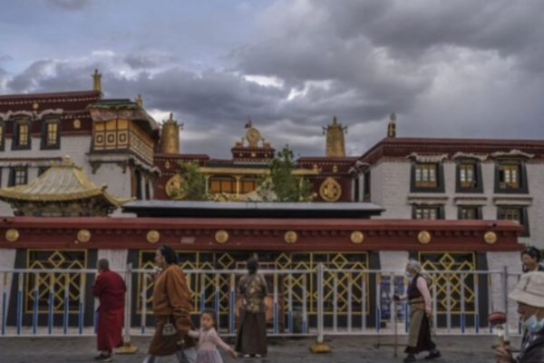

2021年6月1日，在中国西藏拉萨联合国教科文组织世界遗产大昭寺前，藏传佛教徒在转经。（Kevin Frayer/Getty Images） 【2024年08月07日讯】（记者Andrew Chen报导/李平编译）多伦多大学公民实验室（Citizen Lab）最近提交给联合国反恐与人权特别报告员的报告称，中共警方在新疆和青海等少数民族聚居省份大量收集生物特征数据，目的不是用于打击犯罪或恐怖主义，而是用于公共安全监控和社会控制。此外，中共法律本身，也未授权中共警方这么做。联合国反恐与人权特别报告员要求各国民众就反恐法律如何影响公民权利和自由提出意见。各国民众反馈显示，有些国家以国家安全的名义滥用反恐法律，加强警察和安全部队权力，镇压和平抗议。
报告强调，生物识别技术等新技术被某些政府当武器，通过测量面部、指纹、虹膜、声音和DNA等个体特征，来识别或验证人个体身份，加剧对公民维权人士的骚扰。
在7月31日的新闻公告中，公民实验室研究员兼报告作者德克斯（Emile Dirks）敦促特别报告员，要求中共当局说明生物特征收集计划的目的和范围，并说明这些行为是否符合其人权义务。
收集数据进行器官配型
中共大规模收集生物数据不仅仅限于少数民族，外界担心中共此举严重侵犯人权，包括人体器官活摘。英国内政部去年11月一份报告引用2020年7月15日发生的一起事件，指出中共当局使用面部识别技术追踪并绑架一名法轮功学员。
法轮功是一种佛家修炼方法，自1999年以来一直受到中共残酷迫害。
面部识别摄像头能快速识别公民身份，在中共警方名单上的法轮功学员，一直是中共监视目标。过去十多年来，中共一直在收集法轮功学员生物特征和其他数据，并存储在“关键个人“数据库中，目的是用于加速交叉参照和识别。
报告还引用联合国人权事务高级专员2021年6月的一份新闻公告，指出中共对被绑架的法轮功学员与其他被针对的少数群体，进行强制验血和器官检查，然后将结果登记在活体器官来源数据库中，便于器官配型。
美国一份国际宗教自由报告引用了明慧网最初记录的一起事件，指出2022年10月4日，山东省济南市警方绑架了法轮功修炼学员许文龙和表弟二人，然后从两人身上抽取血样，并威胁要弄死许。
责任编辑：文芳